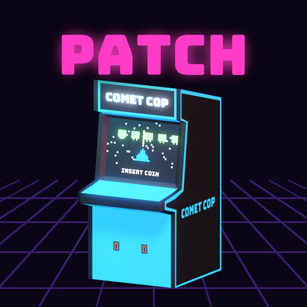

<- all projects

Patchwork Arcade
PC
Volume
Live
Restore fifteen broken arcade cabinets and solve the mystery of the high score.
Your uncle Benny's arcade, Patchwork, closed in 1994 with the lights still on. You inherit the keys, a room of dusty cabinets and a high-score table where every top score belongs to the same initials: ???. Your techs repair 15 original cabinet games, from space shooters to pinball pirates, while you search storage units and yard sales for the rest. Arrange three aisles so the crowds keep moving, because two hot cabinets side by side jam the aisle. Over 6 chapters, old tapes, a hidden notebook and a golden cabinet lead to the 1994 Patchwork Cup.